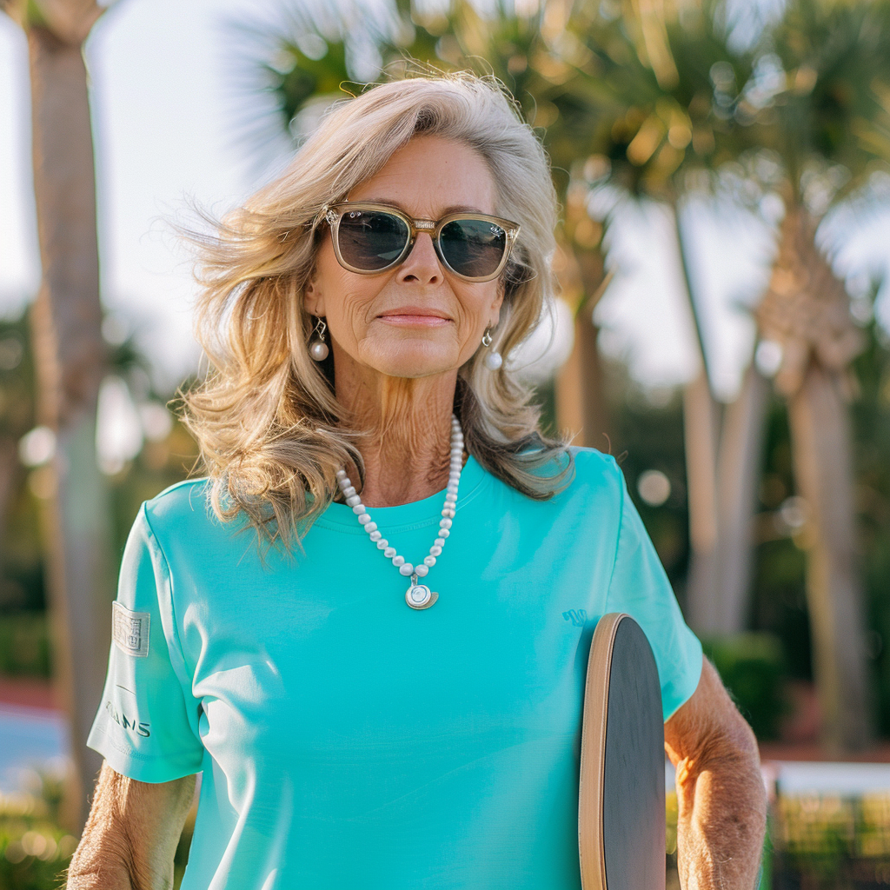
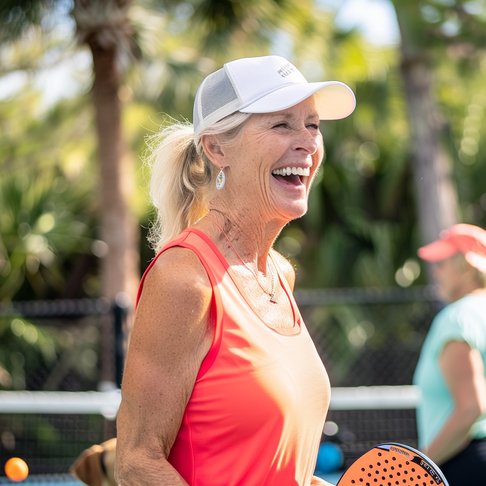
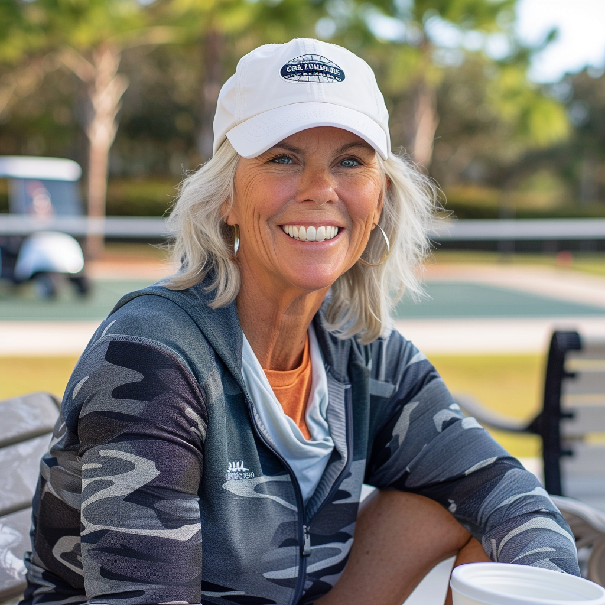
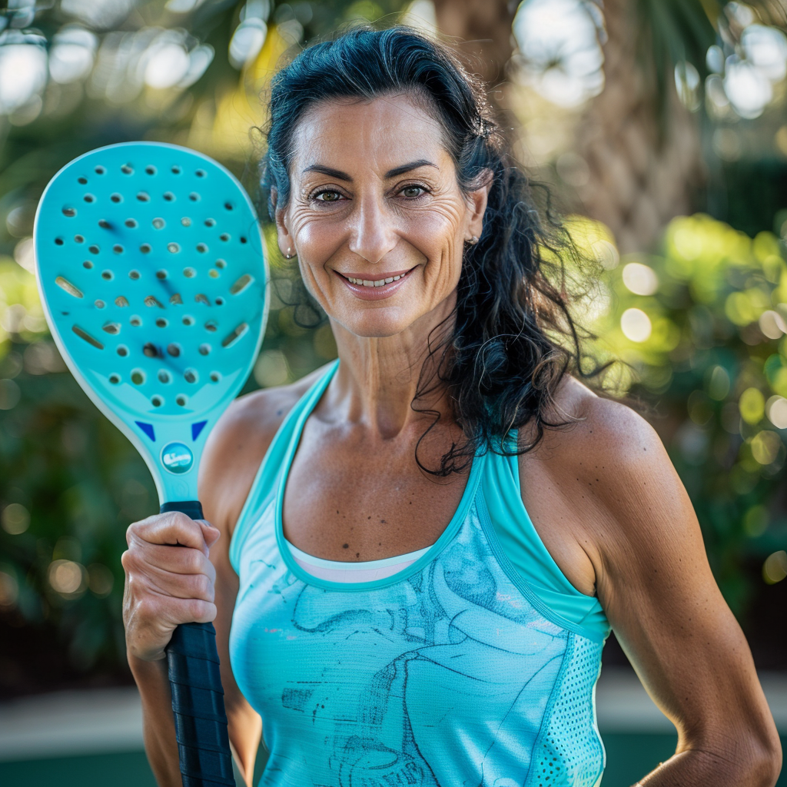

DUPR Rating
Playing Style
Preferred Side
Paddle of Choice
Favorite Spots
Always on Court With
The Dink Diaries
Court-side dispatches from Palm Beach, Naples, The Villages, and Sarasota. Real courts, real people, real Florida pickleball life served with a side of gossip.
The Dink Diaries follows four real women living, playing, and gossiping their way through Florida's most vibrant pickleball communities. New dispatches published weekly.
Meet Your Correspondents




DUPR Rating
Playing Style
Preferred Side
Paddle of Choice
Favorite Spots
Always on Court With
The Dink Diaries
Darlings, where do I even BEGIN with this week? Monday morning at Phipps was absolutely electric and I am not just talking about the humidity that required three touch-ups of my Chantecaille foundation by noon. Bunny and I were paired against the Ashford twins and during the most crucial point of the third game, Bunny executed what can only be described as a demonic serve that ricocheted off the net and somehow ended up lodging itself in Lady Ashford's Kelly bag courtside. The silence. The DRAMA.
Wednesday I finally debuted my Coastal Court Tote paired with my new Loro Piana tennis whites. Even Mitzi Caldwell asked where I got it during our cooldown at The Bath and Tennis Club.
Patrice's Dink Diaries
Honestly this week has been an absolute whirlwind of pickleball and pure Naples magic. Tuesday morning started with the most glorious sunrise session at Naples Grande. Thomas had me working on my third shot drops until my legs were absolutely screaming but I cannot even complain because afterwards Camille and I treated ourselves to lunch at The French on Fifth. The burrata with heirloom tomatoes was life-changing.
Derek joined us for mixed doubles on Thursday and I wore my new Pickleball Florida USA moisture-wicking dress. We grabbed Rosie afterward and walked through Venetian Village where she charmed every single person on the sidewalk.
Nicolette's Dink Diaries
Listen, I have been playing pickleball in this retirement paradise for three years now and I thought I had seen everything. But this week Kenny called a foot fault on Dottie during our Tuesday morning game. Honey, you could have heard a pin drop across all of Lake Sumter Landing. Dottie is from Jersey. She does not forget and she does not forgive. Now she has got me driving our golf cart the long way to courts just to avoid passing his driveway.
The rest of the week was actually pretty great. I finally broke down and ordered one of those Pickleball Florida USA paddle covers and honey it has been a practical delight. Thursday we played at Tierra Del Sol and celebrated with Key lime pie from Katie Belle's.
Vivian's Dink Diaries
Here is the thing. I thought moving to Sarasota would mellow me out. Six years later I am standing at Pompano Park on Tuesday morning having what can only be described as a graphic designer's existential crisis over paddle grip colors while Diane patiently waits for me to serve. Last month I lectured everyone for fifteen minutes about kerning after someone made a tournament flyer in Papyrus. PAPYRUS.
Monday at Urfer was brutal. Marco came along and proceeded to hit perfect third-shot drops while I shanked balls into the next county. Then Wednesday happened and Diane and I absolutely demolished a doubles match at Bay Front. We stopped at Piccolo Italian Market after because winning requires prosciutto. It is science.
Stella's Dink Diaries
Weekly court gossip, player stories, and Florida pickleball life delivered straight to your inbox every Tuesday.
You are in! The Dink Diaries hits your inbox every Tuesday.